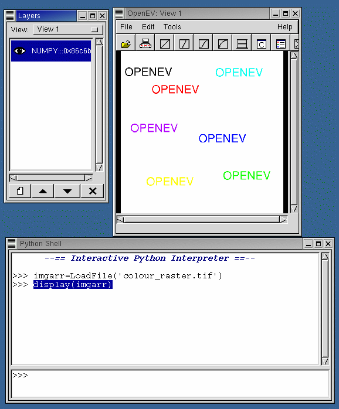
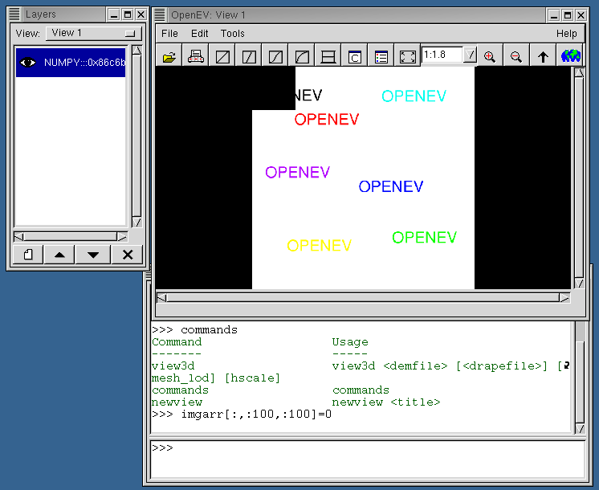
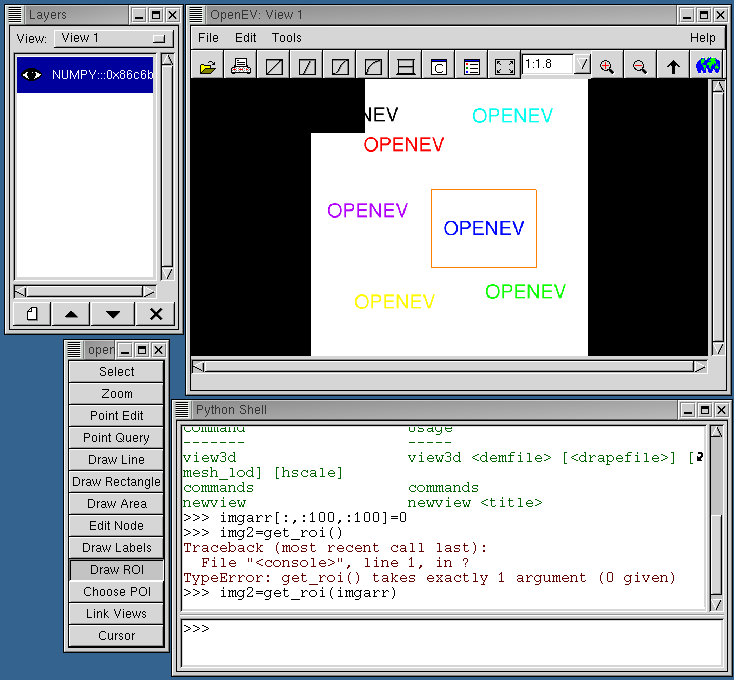

Developer Tutorial 2: Working with rasters
- Start openev and launch the python shell (Edit->python shell)
Load the colour raster example as a Numeric python array using:
- imgarr=LoadFile('colour_raster.tif')
If openev was not started from the directory containing colour_raster.tif,
you will have to enter the full path in the filename. The array can be
displayed in the current view using:

This method can be used to display any greyscale (NxM) or
red-green-blue (3xNxM) Numeric python array. Now, change
imgarr a bit:
and press the refresh button on
the iconbar. You should see the top left corner turn black.

Now launch the toolbar (Edit->Tool bar) and select "Draw ROI".
Left click and drag out a region on the image

Now get the region of interest from the image using the
get_roi() command:
Display it in a new view:
Save it as a tiff file that can be loaded up by openev or other
applications:
- SaveArray(img2,'mini_raster.tif','GTiff')
Working with rasters in code
Now we will try something similar that goes more under the hood
of OpenEV/gdal:
- imgds=gdal.Open('colour_raster.tif')
Typing dir(imgds) and dir(gdal.Dataset) shows the properties of the
image and the functions available to the class. The gdal.Dataset
class stores all the information that gdal was able to pull from the
image file, including ground control points (GCPs) and metadata, and
provides functions to access the data in each raster band.
Now, turn it into a GvRaster:
- imgraster=gview.GvRaster(dataset=imgds)
A GvRaster can also be created by passing the filename directly:
- imgraster=gview.GvRaster(filename='colour_raster.tif')
The GvRaster class allows you to manipulate the data stored in
the gdal Dataset (or file). For instance, the functions
pixel_to_georef/georef_to_pixel allow you to convert from
pixel/line coordinates to georeferenced coordinates. It also
stores (at the c-level) scaling minimum and maximum values
to use in display, and provides functions to retrieve
and change them. In addition, it replicates some of gdal Dataset's more
useful functions for convenience (get_gcps/set_gcps). The GvRaster
also has 'data-changed' and 'data-changing' signal that were
meant to be used in the context of editing and the undo mechanism, but these
have never really been used because currently OpenEV's editing capabilities
(through the toolbar) are limited to vectors.
Next, create a raster layer from the raster, and display it in a new
view:
- imgrlayer=gview.GvRasterLayer(raster=imgraster)
- newview
- cview=gview.app.sel_manager.get_active_view()
- cview.add_layer(imgrlayer)
This will show one of the bands of the image in greyscale in the view.
Now we will add the others:
- imgraster2=gview.GvRaster(dataset=imgds,real=2)
- imgraster3=gview.GvRaster(dataset=imgds,real=3)
The real=2 and real=3 arguments indicate that the raster should
be formed from bands 2 and 3 of imgds (default is band 1). It should
be noted here that gvviewwindow.py in OpenEV uses a different type of
call to create these rasters:
- green_raster = gview.manager.get_dataset_raster(dataset,2)
This call goes through the gview manager to ensure that the data for
a given dataset is only stored in one place in memory, even if the
image is loaded as a layer in several views. This saves space if,
for instance, a user is looking at the same image in two views at
different zoom levels.
Attach the new rasters to the layer:
- imgrlayer.set_source(1,imgraster2)
- imgrlayer.set_source(2,imgraster3)
You should see the image take on colours. You can also add on an alpha
band (in this case, we set it to the blue band:
- imgrlayer.blend_mode_set(gview.RL_BLEND_FILTER)
- imgrlayer.set_source(3,imgraster3)
Now, the colours that have blue components show up with an intensity
proportional to the blue component: (red,green,blue)*blue/255. The
blend_mode_set call tells OpenGL to use the alpha component; without it,
the usual red-green-blue image will be shown.
- imgrlayer.blend_mode_set(gview.RL_BLEND_OFF)
Next
Developer Course Outline
OpenEV Main